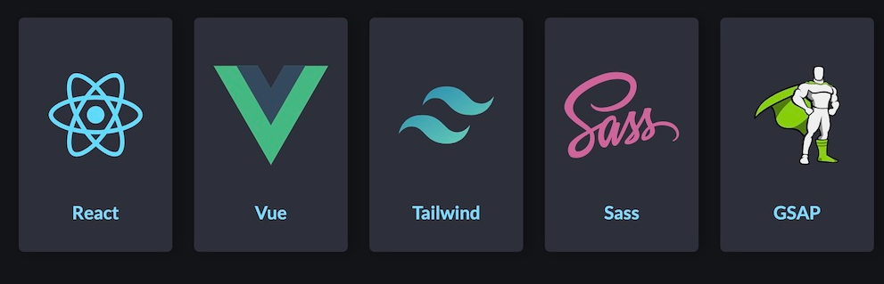

Evidencia 1
Practica 1 - 13/08/2025 al 15/08/2025
Para la practica 1 desarrolle una pagina web sencilla con tematica de 4 pasatiempos mios, estuve contando con la estructura base, header, main, footer. Además de utilizar etiquetas como article, section para separar cada pasatiempo. Todo fue subido a un repositorio personal alojado en GitHub, además se subio a la internet por medio de GitHub y también se tomaron en cuenta las fechas de los commit, teniendo que quedar en un rango del 13/08/2025 al 15/08/2025.
Practica 2 - 20/08/2025 al 22/08/2025
Para la practica 2 se alojaron los primeros links de la practica 1 en el repositorio de la organización
Practica 3 - 27/08/2025 al 29/08/2025
Para la practica 3 tome de inspiración la página pasatiempos personal para realizar la versión 2.0 pero esta vez la tuve que guardar en la organización. Utilicé 5 archivos html para la información de mis pasatiempos. En cada documento html utilicé etiquetas de estructura (header,nav, main,aside,footer). También nuevas etiquetas del material de clase y por ultimo diseñe un formulario (form).
Practica 4 - 01/09/2025 al 03/09/2025
Para la practica 4 solo puse un estilo a mi link en la pagina principal de la organización.
Practica 5 - 08/09/2025 al 10/09/2025
Para la practica 5, utilice mis archivos HTML sobre mis pasatiempos versión 2 para crear un sitio donde muestro que utilice al menos 1 tipo de selector CSS.
- Selector universal
- Selector de tipo
- Selector por ID
- Selector por clase
- Selector de atributo
- Selector de lista
- Selector de descendientes
- Selector de hijos directos
- Selectot de hermanos adyacentes
- Selector de hermanos generales
Practica 6 - 10/09/2025 al 12/09/2025
Para la practica 6, utilizando flexbox, creé un documento HTML donde diseñé lo que se muestra en la imagen siguiente:
Evidencia 2
Practica 1 - 06/10/2025 al 07/10/2025
Practica realizada en clase (06-10-2025).